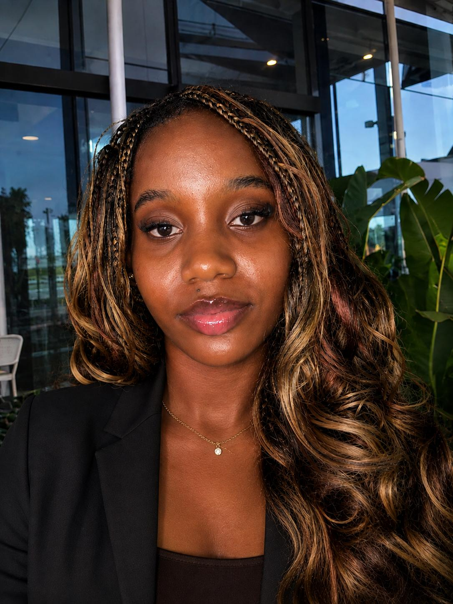

Une question
Quelqu’un a un cours sur les graphes ?
Étudiante en L3 Informatique · Marseille
Marie Ange Yedoh
Je transforme des idées en applications concrètes, utiles et agréables à utiliser. Curieuse, créative, et toujours en train d’apprendre quelque chose de nouveau.

3projets réalisés ou en cours
5personnes dans mon plus grand projet d’équipe
2mois de stage recherchés, avril – mai 2027
Ce que je recherche
Un stage de deux mois en développement logiciel
D’avril à mai 2027, pour participer à des projets concrets, progresser et découvrir le fonctionnement d’une équipe technique. Mon intérêt grandit pour la conception logicielle et l’intégration de l’intelligence artificielle dans les applications.
À propos
Qui je suis, vraiment
Je m’appelle Yedoh Nahane Marie Ange, étudiante en troisième année de Licence Informatique à Aix-Marseille Université.
L’informatique m’attire parce qu’elle permet de passer d’une idée à une application que l’on peut utiliser. Je m’intéresse au développement logiciel, à la conception d’applications web, à l’expérience utilisateur et à ce que l’intelligence artificielle rend possible.
Je ne prétends pas tout maîtriser : je construis mes compétences pas à pas, grâce aux cours, aux projets personnels, au travail en équipe et à l’apprentissage autonome. J’utilise aussi l’IA comme aide à l’apprentissage, pour mieux comprendre les notions et explorer des solutions. Pour moi, c’est une façon de progresser, pas un raccourci.
Créativité
Imaginer et donner vie à des idées, en code comme en couture.
Curiosité
Explorer de nouvelles technologies et des domaines différents.
Autonomie
Prendre des initiatives et apprendre par moi-même.
Esprit d’équipe
Projets universitaires menés en équipe et en binôme.
Adaptabilité
M’adapter à de nouveaux environnements et de nouvelles méthodes.
Organisation
Découper les problèmes et avancer étape par étape.
L’envie de progresser
Chaque projet est une occasion d’apprendre. J’avance avec curiosité, persévérance et l’envie sincère de découvrir de nouvelles technologies.
Parcours
Études et expérience
2024 – 2025
L1 MIASHS
Aix-Marseille Université. Un parcours mêlant mathématiques, informatique et sciences humaines et sociales : des bases variées avant mon choix de l’informatique.
Été 2025
Équipière polyvalente · Quick, Paris
Une expérience complémentaire, sans lien avec l’informatique, qui m’a fait découvrir les exigences du travail en équipe, le sens du service et l’importance de l’organisation.
- Accueil et service des clients, préparation des commandes, encaissement
- Participation à la gestion des stocks, respect des règles d’hygiène
- Travail en équipe et adaptation aux périodes de forte activité
2025 – 2026
L2 Informatique
Aix-Marseille Université. Une orientation plus marquée vers la programmation et la conception de solutions. Projets universitaires JavaMastery AI et AMUConnect, notions de bases de données et questions de sécurité informatique selon les enseignements.
2026 – 2027 · année en cours
L3 Informatique
Aix-Marseille Université. Approfondissement de la conception de logiciels, de la qualité des applications, de l’ergonomie et du développement web.
Premier semestre
- Conception logicielle et informatique
- Ergonomie et prise en compte de l’utilisateur
- Méthodes de conception et de structuration des applications
Second semestre · à venir
- Développement web
- Interface utilisateur et UI
- Bases de données
Projets
Trois projets, trois histoires
Équipe de 5 · L2 · inspiré de Scrum
JavaMastery AI
Apprendre Java autrement : une plateforme pédagogique avec cours, quiz et progression par chapitre.
Binôme · web
AMUConnect
Connecter les étudiants : poser des questions, publier et partager des ressources.
En cours · projet personnel
NoteFlow
Organiser ses notes intelligemment : une application de prise de notes qui évolue progressivement.
Les visuels sont des maquettes conceptuelles, pas des captures des applications réelles.
Équipe de 5 · L2 · cadre inspiré de Scrum
JavaMastery AI
Le problème, l’objectif
Aider les personnes qui apprennent Java avec une plateforme pédagogique structurée et guidée.
Ma contribution
J’ai principalement développé les cours et l’interface en HTML, CSS et JavaScript. Le reste a été réalisé par l’équipe : je n’ai pas réalisé seule la plateforme, le backend ou l’intégration de l’IA.
Ce que j’en retiens
Travailler à cinq avec une organisation inspirée de Scrum, et concevoir des contenus et une interface clairs pour des apprenants.
Fonctionnalités du projet (équipe)
- Cours structurés pour apprendre Java
- Quiz et progression pédagogique
- Déblocage des contenus selon les résultats aux quiz (80 % minimum)
- Assistant conversationnel fondé sur l’API Gemini
- Génération de quiz et suivi de progression
Binôme · application web
AMUConnect
Le problème, l’objectif
Faciliter les échanges entre étudiants : poser des questions, publier du contenu et partager des ressources, dans une application pensée pour une communauté étudiante.
Ma contribution
- Gestion de la connexion par sessions
- Hachage des mots de passe
- Gestion des publications
Ce que j’en retiens
Mettre en place une authentification de base de façon sérieuse et construire une application web complète à deux.
Technologies
Projet personnel · en cours de développement
NoteFlow
L’objectif
Créer une application de prise de notes et d’organisation des connaissances, avec une interface moderne et des fonctionnalités qui évoluent progressivement.
Ce que j’apprends
React, Node.js, Express, l’authentification JWT et le hachage bcrypt : certaines de ces technologies font partie de mon apprentissage autonome, je ne les maîtrise pas encore.
Où j’en suis
| Organisation des notes | En développement |
| Tags et favoris | En développement |
| Historique des versions | En développement |
| Liens entre notes | En développement |
| Assistance par IA (synthèse, tags) | En exploration |
Compétences
Ce que je sais faire, ce que j’apprends
Langages
Développement web
Aussi en cours d’apprentissage :
Bases de données
Outils
Intelligence artificielle
Découverte et utilisation d’API d’IA dans des projets, notamment l’API Gemini dans JavaMastery AI (projet d’équipe).
Façon d’apprendre
Cours, projets, apprentissage autonome, et IA comme aide pour comprendre et explorer des solutions.
Ici, pas de jauges : un niveau ne se mesure pas avec un pourcentage. Les contours en pointillés signalent ce qui est en cours d’apprentissage.
Au-delà du code
Les facettes de Marie Ange
Couture et mode
Imaginer, choisir, assembler, ajuster
Je sais coudre et la mode m’intéresse. C’est ma façon de concevoir autrement : travailler avec précision et transformer une idée en quelque chose de concret. Une passion personnelle, qui nourrit ma créativité.
Athlétisme, course et natation
Discipline, régularité, persévérance
Je pratique l’athlétisme et la course, notamment la vitesse, et j’aime la natation. L’effort et la progression par petites étapes me ressemblent, en sport comme en développement.
Musique
Une autre façon de s’évader
Découvrir des univers, m’inspirer, m’évader.
Langues et culture
Curiosité pour les langues
Françaislangue principale
Anglaisdébutant, en progression
Allemandnotions de base
Mandarinpremières notions
Indications personnelles, sans certification.
Contact
Travaillons ensemble
Je recherche un stage de deux mois en développement logiciel, d’avril à mai 2027. Un message suffit pour échanger.